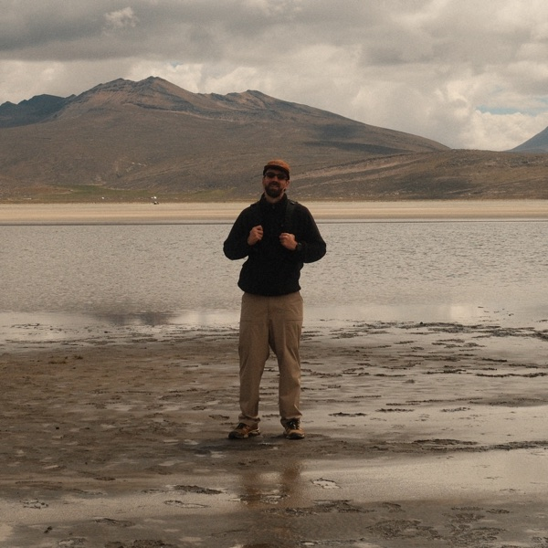

Luca Scofano
Pre-training multilingual language models.
01 — Biography

I'm a Senior AI Researcher at Translated, where I work on pre-training multilingual language models, from designing data mixtures and training curricula to evaluating how models perform across languages. Most recently, I worked on the pre-training data of Lara Mini Base, a multilingual mixture of experts released in November 2026.
This work is part of DVPS, a Horizon Europe project building models that learn from vision and the physical world, not just text.
I started out in computer vision. I did a PhD and postdoc at Sapienza University, with a stint at TU Darmstadt, working on multimodal AI, topological deep learning, and embodied AI.
Off the clock, I'm usually trekking, taking photos, or making art.
02 — Latest
03 — Selected Research
8 papersShowing: ·